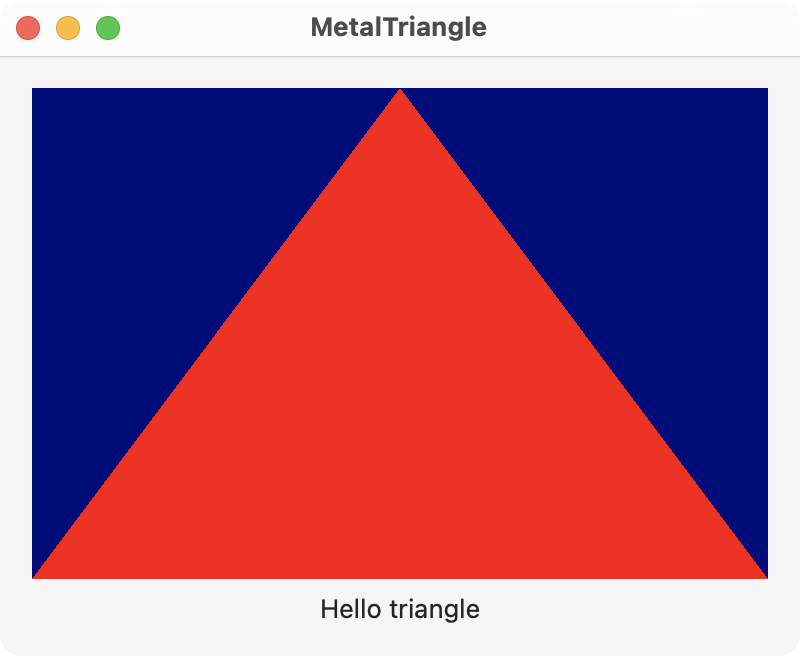

This example creates a triangle using vertex and fragment shaders.

The main view is shown below and contains the MetalView where the triangle is drawn.
// ContentView.swift
import SwiftUI
import MetalKit
struct ContentView: View {
@State private var mtkView = MTKView()
@State private var renderer: Renderer?
var body: some View {
VStack {
MetalView(mtkView: mtkView)
.onAppear {
renderer = Renderer(metalView: mtkView)
}
Text("Hello triangle")
}
.padding()
.frame(width: 400, height: 300)
}
}
The MetalView represents a MTKView as shown below. Notice the MTKView must be wrapped with a NSViewRepresentable for SwiftUI.
// MetalView.swift
import SwiftUI
import MetalKit
struct MetalView: NSViewRepresentable {
let mtkView: MTKView
func makeNSView(context: Context) -> some NSView {
return mtkView
}
func updateNSView(_ nsView: NSViewType, context: Context) { }
}
The Renderer object sets up the Metal device, pipeline, and buffers for drawing to the view.
// Renderer.swift
import MetalKit
class Renderer: NSObject, MTKViewDelegate {
static var device: MTLDevice!
static var commandQueue: MTLCommandQueue!
var pipelineState: MTLRenderPipelineState!
var vertexBuffer: MTLBuffer!
// Define the vertices of the triangle as a flat array
// 0,1
// -1,1 ......... 1,1 ....*....
// . . . / \ .
// . 0,0 . . / \ .
// . . ./ \.
// -1,-1 ......... 1,-1 -1,-1 *-------* 1,-1
let vertices: [Float] = [
0, 1, 0,
-1, -1, 0,
1, -1, 0
]
init(metalView: MTKView) {
super.init()
// Setup command queue
guard let device = MTLCreateSystemDefaultDevice(),
let commandQueue = device.makeCommandQueue()
else {
fatalError("GPU not available")
}
Renderer.device = device
Renderer.commandQueue = commandQueue
// Setup metal view
metalView.device = device
metalView.clearColor = MTLClearColor(red: 0, green: 0, blue: 0.5, alpha: 1)
metalView.delegate = self
// Build the vertex buffer and pipeline
buildModel()
buildPipelineState()
}
private func buildModel() {
vertexBuffer = Renderer.device.makeBuffer(bytes: vertices,
length: MemoryLayout<Float>.size * vertices.count)
}
private func buildPipelineState() {
let library = Renderer.device.makeDefaultLibrary()
let vertexFunc = library?.makeFunction(name: "vertex_shader")
let fragmentFunc = library?.makeFunction(name: "fragment_shader")
let descriptor = MTLRenderPipelineDescriptor()
descriptor.vertexFunction = vertexFunc
descriptor.fragmentFunction = fragmentFunc
descriptor.colorAttachments[0].pixelFormat = .bgra8Unorm
do {
pipelineState = try Renderer.device.makeRenderPipelineState(descriptor: descriptor)
} catch let error as NSError {
print(error)
}
}
func mtkView(_ view: MTKView, drawableSizeWillChange size: CGSize) { }
func draw(in view: MTKView) {
// Get the view's drawable and descriptor
guard let drawable = view.currentDrawable,
let descriptor = view.currentRenderPassDescriptor
else { return }
// Make the command buffer and encoder
let commandBuffer = Renderer.commandQueue.makeCommandBuffer()
let commandEncoder = commandBuffer?.makeRenderCommandEncoder(descriptor: descriptor)
commandEncoder?.setRenderPipelineState(pipelineState)
commandEncoder?.setVertexBuffer(vertexBuffer, offset: 0, index: 0)
commandEncoder?.drawPrimitives(type: .triangle, vertexStart: 0, vertexCount: vertices.count)
// End encoding, present the drawable view, and commit the buffer
commandEncoder?.endEncoding()
commandBuffer?.present(drawable)
commandBuffer?.commit()
}
}
The vertex and fragment shader functions draw the red triangle in the Metal view.
// Shaders.metal
#include <metal_stdlib>
using namespace metal;
vertex float4 vertex_shader(const device packed_float3 *vertices [[buffer(0)]],
uint vertexId [[vertex_id]])
{
return float4(vertices[vertexId], 1);
}
fragment half4 fragment_shader() {
return half4(1, 0, 0, 1);
}
Swift Programming for macOS © 2025
Built by Gavin Wiggins